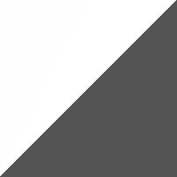
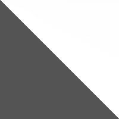
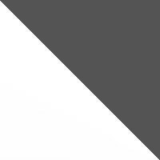

I played with Naef blocks to make them responsive. Change the width of your browser, or check it out on different devices, to see what happens.
The graphics were originally black and white, and I added color using CSS code. This saved 15% - 30% on image size, which made the loading time faster.


